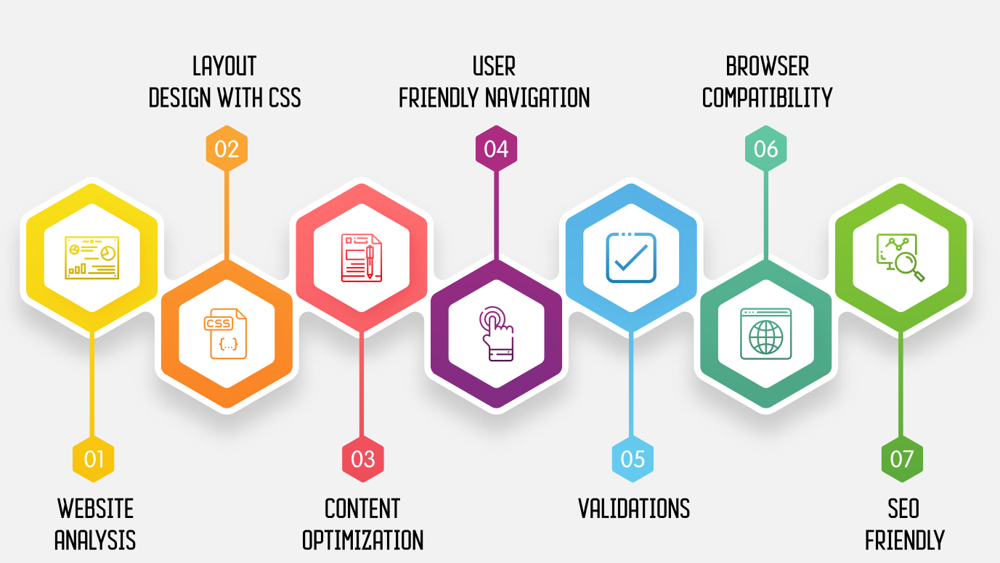

+40 747 375 433
+40 747 375 433
 contact@goldwebdesign.ro / goldwebdesign@yahoo.com+40 747 375 433contact@goldwebdesign.ro / goldwebdesign@yahoo.com
contact@goldwebdesign.ro / goldwebdesign@yahoo.com+40 747 375 433contact@goldwebdesign.ro / goldwebdesign@yahoo.comImportanta unui web design bine realizat este una foarte mare. De foarte multe ori, succesul in transmiterea unei informatii sau in vanzarea unui produs sau serviciu consta in cat de atractiv sau cat de bine realizata este pagina web prin intermediul careia dorim sa ne promovam.
Pentru a ne da seama cat de bine realizat sau de efect este un web design trebuie sa ne raspundem la cateva intrebari care tin nu numai de aspectul vizual al unui site, ci si de rapiditatea cu care un utilizator ajunge la informatia dorita, pe site-ul nostru.
Aspecte care demonstreaza cat de bine realizat este un web design
Design atractiv si interfata prietenoasa – Un web design bine realizat este acela care ii creaza vizitatorului un sentiment puternic de incredere si profesionalism.
Interactivitate – Pentru a iti dovedi ca site-ul tau este unul foarte bine realizat, acesta ar trebui sa converteasca utilizatorii in fani si simpla vizita in actiune chiar de la prima vizita.
Organizarea – Totul in cadrul unui site web trebuie sa aiba o ordine logica, ajutand vizitatorul sa gaseasca cu usurinta ceea ce cauta. Meniul de navigare al site-ului trebuie sa ocupe o pozitie logica si consitenta in cadrul fiecarei pagini.
Ce intelegem, de fapt, prin web design?
Multora dintre specialisti in web design le place sa vorbeasca despre acesta ca fiind o imbinare intre arta, psihologie, marketing si mecanisme tehnice. Adevarul este ca un web designer expert, reuseste sa fie un artist – deoarece trebuie sa fie tot timpul creativ si sa dea nastere unor noi concepte; psiholog – deoarece incearca sa isi inteleaga utilizatorii si sa le dea acestora ce isi doresc; specialist in marketing – stie intotdeauna ce poate aduce sau nu succes in online; mecanic tehnic – deoarece pune cap la cap o serie de elemente tehnice si reuseste sa lucreze eficient cu ele.
Daca iti doresti un site original si de succes, te asteptam aici!